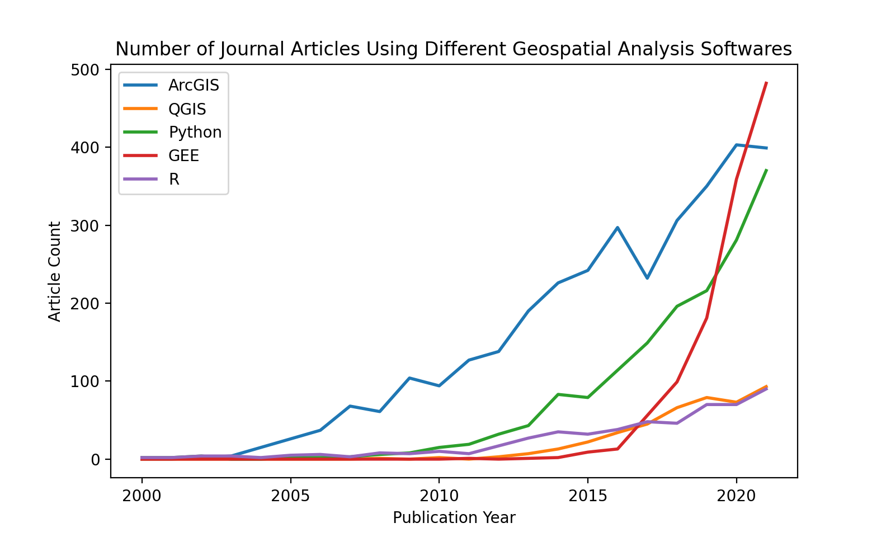
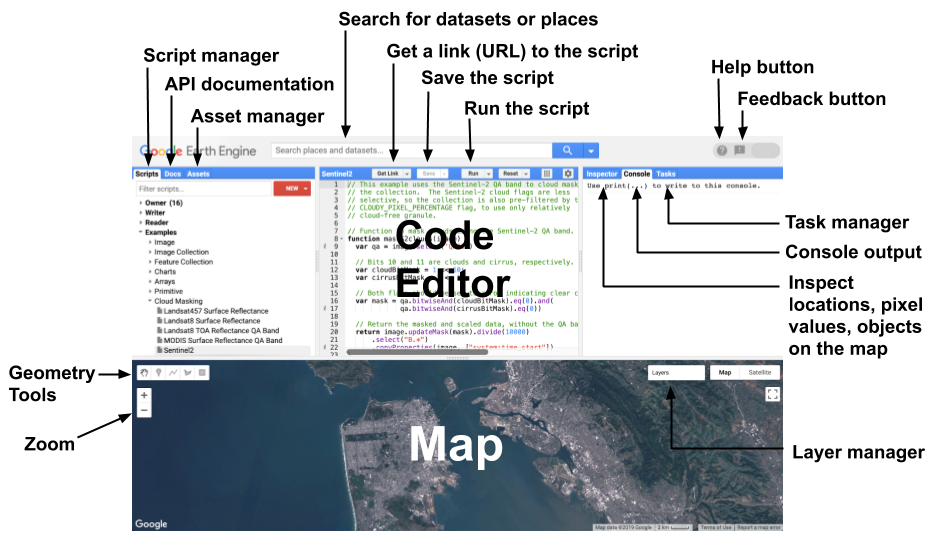
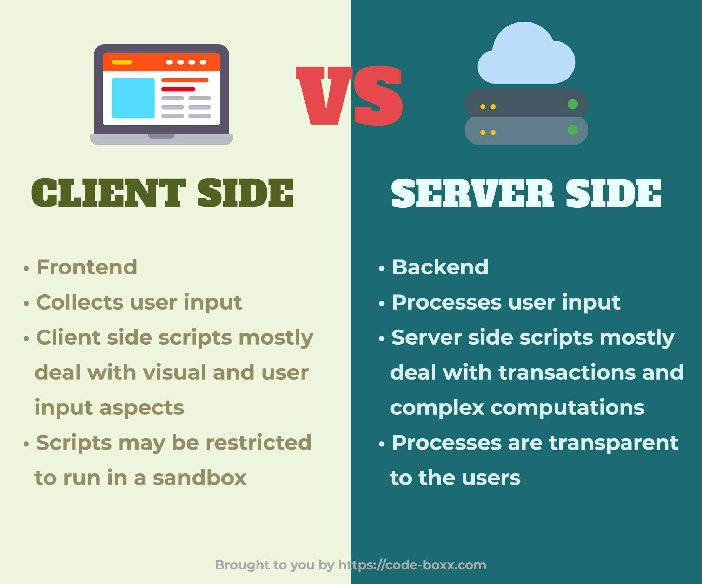
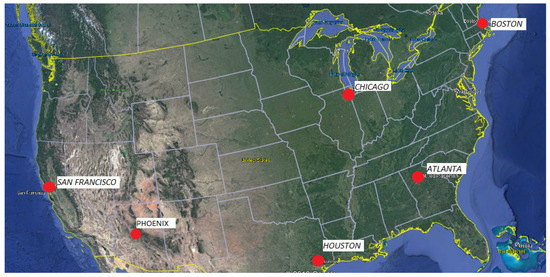
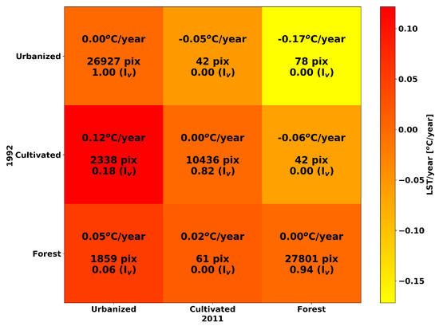

5 Week 5 - GEE
Since the first session of both my modules CASA0023 and CASA0025, I have heard about the various capabilities of Google Earth Engine (GEE). For instance calculating vegetation indices such as NDVI from large amounts of satellite imagery to track changes in land cover over time, all without putting strain on my local computer since the processing is done in the cloud. Or developing an application that visualises blast damage in vulnerable countries, as demonstrated by Ollie Balanger’s work. Now I can finally see it for myself!
GEE is powerful geospatial software and allows us:
To query data from the whole Landsat archive in seconds rather than hours.
To build and publish interactive maps as web applications using Earth Engine Apps.

Source:CASA0025
In CASA0025 we were presented this image, which shows that since its 2015 release, GEE has surpassed other spatial software in research use and is widely applied by NGOs, universities, and international bodies.
Likewise, it is free for non-commercial and research use!
I am beginning to think the possibilities are endless…
The image below shows the Google Earth Engine interface, which consists of a code editor for writing scripts and a map window for visualising geospatial data and analysis results. Google Earth Engine also provides a vast data catalog containing satellite imagery, climate records, and other geospatial datasets that can be accessed instantly for analysis.
 Source:Google for Developers
Google Earth Engine combines vast satellite image collections with cloud computing. Users can script analyses such as NDVI, forest loss tracking, or cloud-free mosaics, with processing handled on Google’s servers and outputs delivered as maps, charts, or exports.
In Earth Engine, anything with ee is a server-side ‘proxy object’ meaning it doesn’t store data locally, only a reference to data on Google’s servers. Normal loops won’t work because they run locally, but the values I want to loop through aren’t actually there. Instead, you use mapping functions like .map(), which apply a function to each element of a collection on the server.
 Source: Pinterest”
This was initially quite confusing but now I understand that it’s what allows Earth Engine to process huge satellite datasets quickly by running the calculations on Google’s servers instead of my computer.
5.1 Applications:
Parks et al. (2018) used Google Earth Engine to develop an image merging approach for mapping fire severity across large areas. They collected all available Landsat images within a defined time window and merged them into a composite image using mean calculations to reduce noise and artefacts. From these composites, they derived burn severity metrics such as the differenced Normalised Burn Ratio and the relativised differenced Normalised Burn Ratio. This approach allowed rapid and scalable analysis compared with traditional manual or field-based techniques. However, an error in the original script produced incorrect relativised differenced Normalised Burn Ratio values. The authors later corrected the formula and updated the figures, ensuring the accuracy and reliability of their severity assessments.
Ravanelli et al., (2018) on the other hand utilised GEE and the USGS National Land Cover Database (NLCD) to monitor the impact of Land Cover Change on Surface Urban Heat Island in 6 US metropolitan areas.

GEE’s ability to manage and access an extensive volume of satellite data allowed these researchers to access over 6000 Landsat images and use the Climate Engine web application to extract land surface temperature (LST) from Landsat 4-7, band 6.
Moreover, the study used pre classified Landsat data from the National Land Cover Database and grouped various land cover classes into main categories (urbanised, cultivated and grass/shrubland) and incorporated a Detrended Rate Matrix (DRM) to assess the correlation between land cover changes versus increasing temperatures. A DRM computes a baseline or average temperature trend over time and removes the influence of it allowing for a clearer understanding of how LCC impacts local temperatures.
Here you can visualise directly how urbanising increases SUHI due to the increase in LST.

The study noted that broad land cover groupings, such as merging residential, commercial, and industrial areas into one “Urbanized” class, may have oversimplified important urban variability in surface properties like albedo, vegetation, and heat emissions.
Both studies show that while GEE enables rapid processing of vast datasets, reliability can be undermined by coding errors in severity metrics (Parks et al., 2018) or by broad land-cover groupings that obscure urban variability (Ravanelli et al., 2018). The limitation lies less in the platform itself than in the methodological choices made within it. Future research could combine GEE’s scalability with high resolution datasets like Sentinel-2, robust classification methods, and automated validation tools to strengthen validity and transparency in large-scale environmental assessments.
5.2 Reflection:
This week has been very interesting since I have learned how to use a new software (GEE)and coding language (Javascript) which isn’t as difficult as I thought it would be.
The key value for me is not just speed, but the way GEE removes technical barriers: I can interrogate decades of Landsat and Sentinel imagery without relying on expensive hardware. This is directly relevant to my work for the council where fast and reliable analysis is needed for planning and environmental decisions but we don’t have the computing power to do this effectively. Likewise, as a student I can access GEE for free, but in a commercial setting the council would need to pay, which could be a barrier to using it.
Although, I am thinking about how I could use it for my dissertation. Tower Hamlets is densely built and has limited green space, so quantifying the cooling effect of vegetation is critical. Using indices such as NDVI or land surface temperature products, I could map where green cover has declined and overlay this with demographic data to identify communities most exposed to urban heat. Similarly, GEE could support routine monitoring of air quality proxies, flood-risk surfaces, or changes in permeable land cover linked to new developments. These are tasks that would be slow and resource-intensive using conventional GIS, but scalable in GEE.
That said, the platform does not eliminate uncertainty. Broad land-cover categories may mask the differences between residential, commercial, and industrial zones within Tower Hamlets, leading to oversimplified conclusions. Likewise, the coding error highlighted in the fire severity study demonstrates that small mistakes can have large consequences. For local governments, this means any GEE analysis must be accompanied by validation against ground truth or higher-resolution datasets.
In the future, I see potential in combining GEE with machine-learning methods for predictive modelling, such as forecasting where heat risk will intensify under projected land-use changes. This makes the tool not just a way of analysing historical data but a means of shaping policy in Tower Hamlets.
5.3 References:
Parks, S., Holsinger, L., Voss, M., Loehman, R. and Robinson, N. (2018). Mean Composite Fire Severity Metrics Computed with Google Earth Engine Offer Improved Accuracy and Expanded Mapping Potential. Remote Sensing, 10(6), p.879. doi:https://doi.org/10.3390/rs10060879.
Ravanelli, R., Nascetti, A., Cirigliano, R., Rico, R.V., Leuzzi, G., Monti, P. and Crespi, M. (2017). Remote Sensing-Based Urban Land Use/Land Cover Change Detection and Monitoring. Journal of Remote Sensing & GIS, 06(02). doi:https://doi.org/10.4172/2469-4134.1000196.